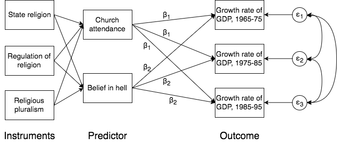

感想メモ：Young (2009) 「社会学研究におけるモデルの不確実性」
授業のReadingsで読んだ論文が面白かったのでメモ。
モデルの不確実性
こんにちの統計分析の過程では、分析者はたくさんの数のモデルを推定するわけだが、実際に論文で報告されるのはそのうちの一握りにすぎない。すなわちそこには、統計モデルで推定される（標準誤差などの）サンプリングの分散あるいは不確実性とは別に、モデルの分散あるいは不確実性が存在する。そして多くの場合、モデル間の分散はサンプリングの分散よりもはるかに大きいものとなる。
こうした問題は、とくに計算機の発達によって新たに現れた問題といえる。計算機が発達する以前は一つのモデルの推定のためには膨大な時間が必要だったため、分析者はあらかじめ周到に分析の計画を立て、また報告されたモデル以外の推定結果は分析者にとっても読者にとっても（実際推定していないのだから）分からない、という状態にあった。
しかし、計算機の発達は即座に数多くのモデルを推定し、その中から分析者が結果を選択することを可能にした。その結果、分析者と、分析結果のうち一握りしか知らされない読者との間に、情報の隔たりが生じるようになる。
そこで筆者は、「真のモデル」を知り得ないという状況にあっては、分析者は主たるモデルのほかにもいくつかのモデルの推定結果を報告し、読者に対して推定結果の不確実性を伝えるべきであると主張する。
モデルの不確実性がサンプリングの不確実性よりもはるかに大きいという知見は、メタアナリシスからも確認されている。たとえば支持政党が裁判官の意思決定に与える効果に関する66の研究のメタアナリシス（Pinello 1999）1によれば、係数の標準誤差の平均は0.034であったのに対して、効果量の標準偏差はそれより8倍以上も大きい0.275におよんだという。その他にも多くの研究が示唆するように、不確実性はサンプリングバイアスからよりもむしろ、いかなるモデルを特定化するかにより強く依存するのである。
ケーススタディ：宗教と経済成長
そこで本論文では、宗教と経済成長の関連という、ウェーバー以来、社会学にとって最も古典的な問題の一つを扱った論文について再分析を行い、モデルの不確実性を評価する。 用いる論文は以下2。
この論文の発見は、宗教性は経済成長を促すが、そこには2つのトレードオフがあるという点である。まず、教会への出席率が高いと、経済成長率は低くなる。一方で、地獄の存在を信じる者の割合が高いと、経済成長率は高くなる。この結果を受けて、Barro and McCleary（以下B&M）は、教会への出席を課すことなく人びとに地獄の存在を信じさせる（ある意味で効率的な）宗教セクターが、最も経済を刺激すると結論づけている。
統計モデル：SUR, IV

モデルはやや複雑だが、パス図にして表すと上図のようになる。他にもいくつかの外生変数が含まれているが、ここでは重要でないので除外している。
従属変数は、1965年から1975年（48カ国）、1975年から1985年（53カ国）、1985年から1995年（52カ国）にかけての平均1人あたりGDP成長率である。もっとも関心となる独立変数は(1)教会出席（Church attendance）—少なくとも月1回宗教行事に参加している人の比率（オッズ）、(2)地獄への信仰（Belief in hell）—地獄の存在を信じる人の比率（オッズ）、の2つである。これらはいずれも1990年に測定された値である3。推定モデルは以下のとおりである。
\[ \begin{align} \Delta Y_{i, 1965-75} = \alpha_{1965-75} + X_{1965-75}\beta + \varepsilon_{i, 1965-75} \\ \Delta Y_{i, 1975-85} = \alpha_{1975-85} + X_{1965-75}\beta + \varepsilon_{i, 1975-85} \\ \Delta Y_{i, 1985-95} = \alpha_{1985-95} + X_{1965-75}\beta + \varepsilon_{i, 1985-95} \end{align} \]
推定はSUR（Seemingly Unrelated Regression）というモデルでなされている。ここでは、3つの方程式の残差相関を許容したうえで、\(\beta\)が3つの時点で常に一定であることが仮定されている。
B&Mの関心は信仰心が経済成長に与える影響を明らかにすることにあるが、この2者の間には逆向きの因果関係も含まれていると考えられる。こうした場合に信仰心の効果を明らかにするには、操作変数（Instrumental variable）を使うのが有効である。操作変数を用いる際の条件は、操作変数を\(Z\)とすると、(1)外生性——操作変数が主たる方程式の残差と相関を持たない \(\mathrm{Cov}(Z, \varepsilon) = 0\)、（2）強い関連——操作変数と説明変数の相関が十分に強い \(\mathrm{Cov}(Z, X) \neq 0\)、の2つである4。
B&Mは上図のように、3つの操作変数を使用している。(1)国教（State religion）、(2)国教が公的に定められているかどうか（State regulation of religion）、(3)宗教的多元性（Religious pluralism）、つまり、国内の宗教がどの程度多様であるか、の3つである。これら3つの変数を操作変数とする場合、教会出席や地獄への信仰といった変数には影響するけれども、経済成長（の残差）には直接影響しないと仮定される。
再分析の結果
Youngは以下の3つの観点から再分析を行っている。順番に見ていこう。
再分析1：操作変数の妥当性
第1に、操作変数の妥当性の評価である。先に述べたとおり、操作変数の妥当性を評価するための1つの基準は、その強さ \(\mathrm{Cov}(Z, X)\) をみることである。これは、他の外生変数をすべて統制したうえで、関心のある説明変数の分散を操作変数群がどの程度説明するかをもって判断することができる。その分析結果が以下である。
| Church Attendance | Belief in Hell | |
|---|---|---|
| State religion | .2027 | .3830** |
| (.1628) | (.1283) | |
| Regulation of religion | -.1122 | .0523 |
| (.1242) | (.0978) | |
| Religious pluralism | .4941 | .4861 |
| (.4430) | (.3491) | |
| Partial R2 | .013 | .016 |
| F statistic | 2.39 | 8.78 |
注）括弧内は標準誤差を示す。その他の統制変数はすべて省略している。** p < .01
Partial R2というのは、新たに変数を追加することがどの程度予測を改善するかを示す指標である。これをみると、3つの操作変数が今回の関心となる説明変数である教会出席と地獄への信仰に対してもつ説明力は極めて弱い。F統計量をみてもそれは同様である。
こうした「弱い」操作変数（weak instrument）を用いると、OLSで推定する場合と比較して係数が過剰に大きくなってしまうバイアスがあることが知られている。そしてこの問題はB&Mの論文にも当てはまる。その結果が以下のとおりである。
| Model 1 | Model 6 | |
|---|---|---|
| 3SLS (by B&M) | without IV (by Young) | |
| Attendance | -.0147** | -.0056** |
| (.0049) | (.0019) | |
| Belief in Hell | .0152** | .0067** |
| (.0052) | (.0022) |
注）括弧内は標準誤差を示す。その他の統制変数はすべて省略している。** p < .01
操作変数を用いた推定がModel 1、操作変数を使用しない推定結果がModel 6（本文中の表記にしたがった）である。操作変数を用いた推定は明らかに係数が大きく推定されており、弱い操作変数を使うことによるバイアスが生じているといえる。
再分析2：各年ごとの分析
B&Wのモデルでは、教会出席と地獄への信仰が経済成長に与える効果は1965–75年、75–85年、85–95年ですべて一定であるという仮定が置かれている。これについても検討の余地がある。そこで、各年でサンプルを分割して改めて推定した結果が以下である。
| Model 8: OLS | Model 9: IV - LIML | |||||
|---|---|---|---|---|---|---|
| 1965–75 | 1975–85 | 1985–95 | 1965–75 | 1975–85 | 1985–95 | |
| Attendance | -.0017 | -.0099* | -.0011 | .0038 | -.0299† | .0621 |
| (.0046) | (.0039) | (.0037) | (.0019) | (.0180) | (.883) | |
| Belief in Hell | .0020 | .0118* | .0058 | .0096 | .0284† | -.0380 |
| (.0052) | (.0048) | (.0042) | (.0278) | (.0151) | (.0765) | |
| N of obs | 48 | 53 | 52 | 48 | 53 | 52 |
| R2 | .78 | .74 | .74 | — | — | — |
注）括弧内は標準誤差を示す。その他の統制変数はすべて省略している。† p < .10, * p < .05
OLSによる推定結果と、LIML5を用いた推定結果を示している。これをみると、宗教性と経済成長率との間に関連があるのは1975–85年だけで、ほかの期間についてはまったく統計的に有意な結果は得られていない。
再分析3：パラメータの異質性
最後に、宗教性と経済成長の間の関連がすべての国や地域において共通に見られるのか、それとも特定の国や地域に限られているのかについて検討している。表は省略するが、交互作用項を取ると、教会出席の負の効果および地獄への信仰の正の効果は、アジアおよびアフリカにおいてしか見られない。
さらに、データの質の問題もある。各国から得られるGDPのデータは、その質によってAからDまでの評価がついているらしく、アジアの一部の国（日本、韓国、イスラエル）を除くとアジアおよびアフリカのGDPのデータの質はあまり良くないらしい6。そこで、データの質がCおよびDであるかどうかのダミーを立てて、教会出席および地獄への信仰との交互作用項をとると、主効果の係数はやはり有意でなくなる。
以上3つの再分析の結果をまとめると、B&Mの分析結果は、
- 妥当でない操作変数を用いているために係数の大きさが過剰に大きく評価され、
- 宗教性と経済成長との間の関連は認められたとしても1975–85年のみ、
- 両者の関連は主としてアジアおよびアフリカの国々においてのみ見られ、さらにその主因はGDPのデータの質が悪い国々における結果を反映した結果である
ということになる。
結論
以上の再分析の結果はただちにWeberの宗教性と経済成長に関するテーゼを否定するものではない。重要なのは、たとえ高名な著者によって行われ、トップジャーナルに掲載された結果であっても、その結果にはかなり大きな不確実性が含まれているという点である。そしてこの不確実性は単純な統計的検定によっては明らかにすることができない。
では、どうすればよいのか？Youngは以下の4つの教訓を指摘している。
モデルの不確実性に注意を払う
モデルの不確実性を評価するためには、多くの感度分析（sensitivity analyses）の結果を報告すべきである。限られた特定化をした場合にしか得られず、モデルの特定化を変えると大きく変わってしまうような結果は、信頼できる発見とはいえない。
再分析（Replication）を容易にする
著者は、論文の出版に際して、データセットと分析に使用したコードを含む再分析のためのパッケージを提出し、読者が自身で結果を再現できるようにすべきである。著者に直接再分析のためのパッケージを求めるのは対立を呼ぶかもしれないし、また著者はしばしばそれを提供しないからである。今回Barroらは再分析を許可してくれたものの、こうしたケースは珍しい。社会科学はこのような個人的な誠実さに頼るだけではだめで、いかなる出版物も批判的な検討を受けられるような制度的な構造が必要である。
出版された結果をランダムにテストする手順を確立する
たとえば、統計分析を行った論文を毎年いくつかランダムに選び出し、データとコードを広く配布し、得られた数値の結果を簡単に要約するといった手順が考えられる。たとえば大学院の統計の授業やゼミなどでこのようなことを行うことができるかもしれない。こうした再分析によって、モデルの不確実性をより透明に評価できるようになるだろう。
モデルの設計を前もって特定化する
今日の統計分析の問題の一つは、著者は真の意味での仮説検定を行ったかどうかを示す方法がないことである。つまり、読者は、著者が分析を始める前に設定した仮説にしたがって分析を行ったのか、それともさまざまにデータを分析した結果、あとから仮説を設定したのかを判断することができない。こうした問題に対処するためには、データを入手して分析を始める前に著者が当初から当該の仮説あるいはモデルの設計を考えていたことを示すことを用意にするための方法が必要である。
たとえば医学系の研究では、臨床実験の前には必ず詳細な研究設計や分析計画を報告する必要があるが、そうした方法がヒントになるかもしれない。つまり、データを得た後でさまざまに探索的な分析を経た結果だけでなく、当初の研究計画の結果についても報告すべきである、という。こうした方法は、読者と分析者の間の情報の非対称性を解消するための一助となるだろう。
Footnotes
Pinello, Daniel R. 1999. “Linking party to judicial ideology in American courts: A meta-analysis.” The Justice System Journal: 219-254.↩︎
筆者によれば、Barro and McCleary（2003）を選択した理由は、SURやIVといった社会学にとってあまり一般的でない新しい手法を用いており、かつ、社会学のトップジャーナルに掲載され、著者らも非常に有名である点、さらに社会学にとって重要な問題を扱っている点を挙げている。驚くべきことに著者のYoungはこの論文が出版されたときにはまだPh.D candidateであり、ちょっとひねくれた言い方をすれば、「大学院生が大御所に喧嘩を売った」論文である。こういう論文を投稿するYoungも勇気があるが、これが掲載されるというのはある意味で業界の健全さを表しているのかもしれない。。↩︎
このように操作化するということはつまり、これら2つの独立変数は全ての国で時間を通じて一定であるか、もしくは平行に変化していると仮定していることになる。↩︎
社会学における操作変数の使用の現状については、Bollen, Kenneth A. 2012. “Instrumental Variables in Sociology and the Social Sciences.” Annual Review of Sociology 38(1):37–72. のレビューがおすすめ。↩︎
限定情報最尤法（Limited Information Maximul Likelihood）は、別々にモデルを推定する2SLS（Two stage least square）や、B & Mが用いている完全情報最尤法（FIML、Full Information Maximul Likelihood）によりパラメータを推定する3SLSと比べるとweak instrumentの問題に対して頑健であるという。ただしサンプルサイズが小さい場合にはさほどメリットがないらしい。↩︎
もちろんこれは1995年までの話であるので、現在はどうなのか分からない。↩︎